Python环境相关
安装第三方 Python 库报错
问题描述：
"ImportError:Forbidden:Moduleopenpyxl not in whitelist!"
问题解答：
该报错是由于券商后台开启了 Python 库白名单，若您使用的是券商提供的QMT终端，请联系您的所属券商开通对应 Python 库白名单权限即可。
启动策略时pandas库报错
报错信息1 ：NameError: name 'pandas' is not defined
解答：
该报错是指当前环境下没有找到pandas库
解决方法
- 请在
设置-模型设置中检查正确设置了路径,正确路径应指向{安装目录}\bin.x64
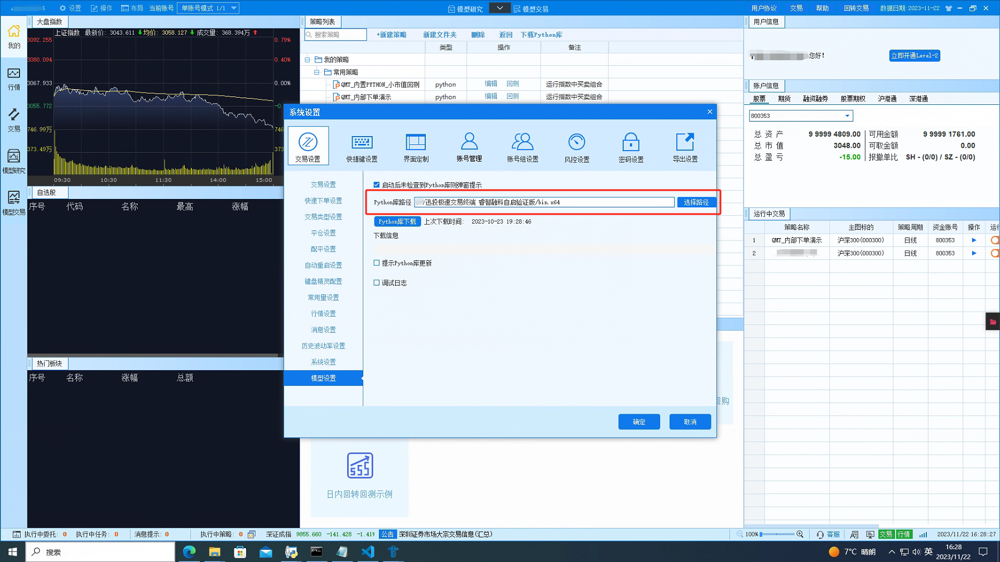
- 请检查是否已经下载了python环境
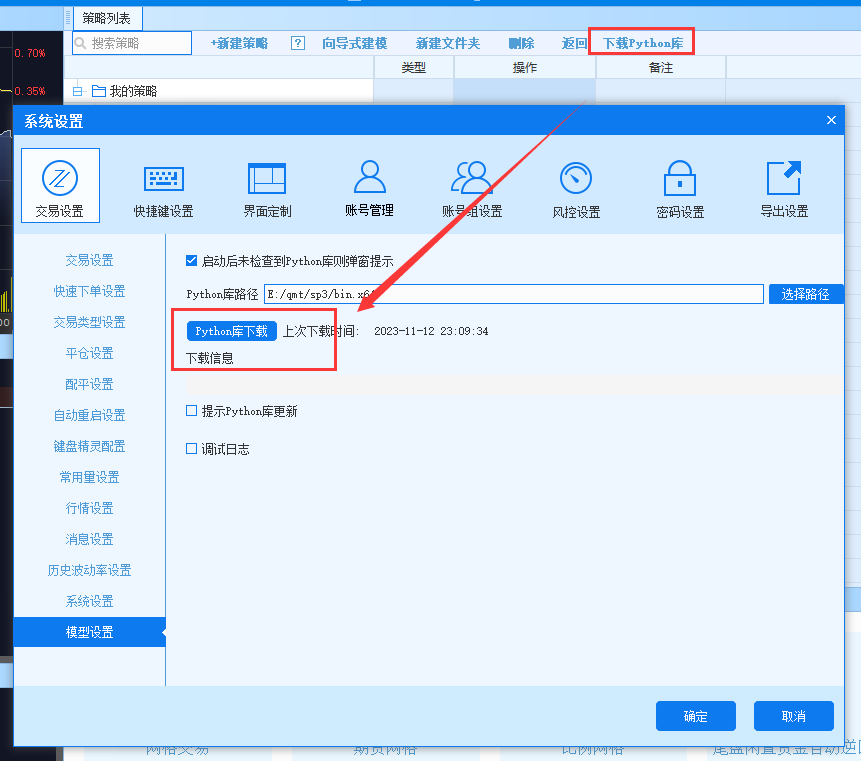
报错信息2 ：AttributeError: module 'pandas' has no attribute 'core'
解答：
该报错是由于在pandas导入中被强行中断导致的
解决方法
重启客户端
对第三方库的支持
QMT Python API 提供基于 Python 3.6 规范的标准量化投资策略应用程序接口，本文档示例代码基于 Python 3.6 规范。我司主要通过以下两种方式对外提供：
系统自带的 Python 环境
QMT 系统的安装包默认自带 Python 运行环境。用户安装完QMT客户端后，默认可以直接使用Python。在这个打包的Python环境中，QMT除了提供标准的 Python api 带的库外，还集成了如下一些第三方库：
| 名称 | 说明 |
|---|---|
| NumPy | NumPy (Numeric Python) 提供了许多高级的数值编程工具，如：矩阵数据类型、矢量处理，以及精密的运算库。专为进行严格的数字处理而产生。 |
| Pandas | Python Data Analysis Library 或 Pandas 是基于 NumPy 的一种工具，该工具是为了解决数据分析任务而创建的。Pandas 纳入了大量库和一些标准的数据模型，提供了高效地操作大型数据集所需的工具。Pandas 提供了大量能使我们快速便捷地处理数据的函数和方法。 |
| Patsy | 一个线性模型分析和构建工具库。 |
| SciPy | SciPy 函数库在 NumPy 库的基础上增加了众多的数学、科学以及工程计算中常用的库函数。例如线性代数、常微分方程数值求解、信号处理、图像处理、稀疏矩阵等等。 |
| Statsmodels | Python 的统计建模和计量经济学工具包，包括一些描述统计、统计模型估计和推断。 |
| TA_Lib | 称作技术分析库，是一种广泛用在程序化交易中进行金融市场数据的技术分析的函数库。它提供了多种技术分析的函数，可以大大方便我们量化投资中编程工作，内容包括：多种指标，如 ADX, MACD, RSI, 布林轨道等；K 线形态识别，如黄昏之星，锤形线等等。 |
第三方库导入指引
除QMT提供的标准 Python api 和集成的部分第三方库，用户也可自己在 Python 官网下载其他所需第三方库，使用方式如下：
（1）本地安装Python环境，下载python3.6，Python官网：https://www.python.org/downloads/release/python-360/
（2）安装位置：C:\Python36
新增环境变量：我的电脑--属性--高级系统设置--高级--环境变量---path：C:\Python36;C:\Python36\Scripts
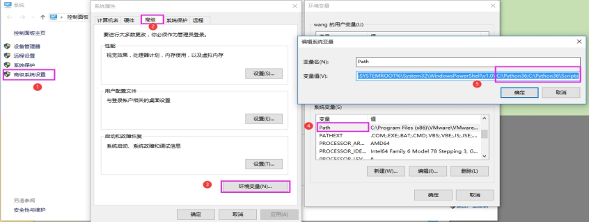
（3）Python环境检查
Win+R 打开运行,输入 cmd
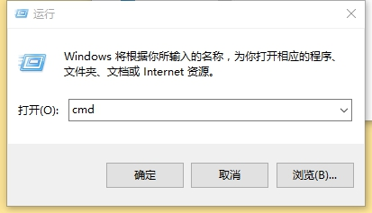
检查Python变量
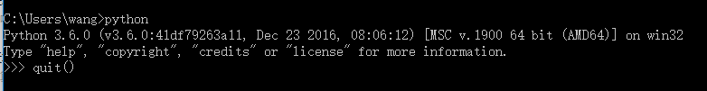
（4）安装第三方库
安装前先确认客户端安装目录，根据个人电脑进行调整。
安装时若遇到下面错误提示，请执行 pip 更新命令 python -m pip install --upgrade pip
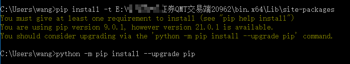
安装三方库命令 pip install openpyxl -t E:\QMT交易端20962\bin.x64\Lib\site-packages
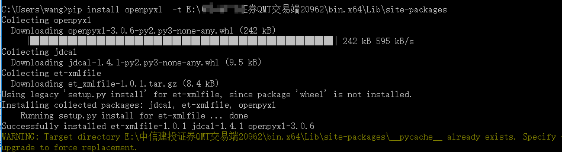
（5）检查安装结果
安装位置\bin.x64\Lib\site-packages检查安装库
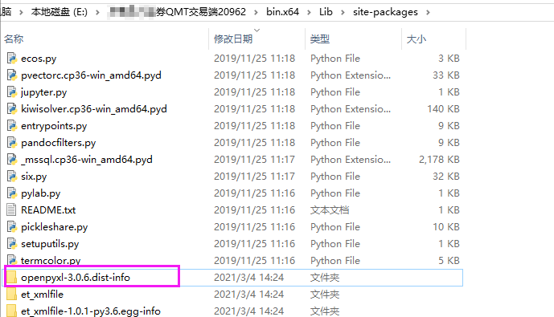
业务规则相关
交易所委托数量规则
- 科创板，连续交易时段限价单笔最大是10万股，市价单笔最大是5万股，盘后定价交易单笔最大量是100万股，200股起，1股递增。
- 创业板，连续交易时段限价单笔最大30万股，市价单笔最大15万股，100股起，100股递增。
- 主板，6和0开头的，连续交易时段单笔最大100万股，100股起，100股递增。
策略运行相关
在策略没有勾选终端启动后自动运行的情况下，策略自动启动运行
情况一
策略被运行于行情界面的副图上，随客户端启动被启动
解决方法
在右上角的页面布局中选择恢复默认布局，并重启客户端 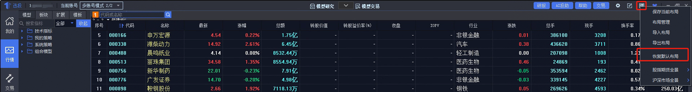
情况二
交易日切换/行情断线重连时，所有挂着的模型会被重新运行，这是正常的
策略回测相关
QMT在回测时如何选择复权方式
解答
回测是为了更贴近历史数据，但实际中各类配股、增发的动作，会造成价格的异常波动，为了避免这样的波动对回测的影响，我们推荐用户在回测中使用等比前复权价，这样在回测过程中，无需考虑配股、增发带来的变化，始终以统一标准的价格进行买卖，方便的同时也能得到更贴合历史数据的回测收益和表现。
交易相关
系统对象 ContextInfo 逐 k 线保存的机制
机制说明
ContextInfo是由底层维护并传递给init、handlebar等系统函数的参数，同一个 bar（不是 bar 里面的 tick，下同）内ContextInfo本质上是同一个变量且对其进行的修改只会对本次handlebar调用的下文所起作用。handlebar里对ContextInfo做的修改在该 bar 结束后才会进行保存，也就是说，对ContextInfo做的修改会在下一个 bar 体现出来。
具体来说，ContextInfo不同于一般 python 对象，做了逐 k 线更新设计，盘中主图品种每个 Level 1 分笔到达会触发handlebar函数调用，但只有 k 线结束时最后一个分笔触发的handlebar调用，对ContextInfo的修改才有效。
每次handlebar函数调用前会对ContextInfo对象进行深拷贝, 下一次分笔行情到来时，如果新的分笔不是新 k 线 bar 第一个分笔，则判断上一个分笔不是k线最后分笔，ContextInfo对象被回退为之前深拷贝的那个。
ContextInfo对象逐k线更新机制设计的目的，是为了在盘中时模拟k线的效果，只在k线结束的分笔触发的handlebar函数运行时生效一次，丢弃所有其他分笔的修改。
影响
该机制有两个影响，一是在ContextInfo对象中存数据每次分笔到达时会被深拷贝，拖慢策略运行；二是ContextInfo适用于记录逐k线生效的交易信号（quickTrade参数传0），不适宜立刻下单的情况。
如不需要模拟k线效果，希望调用交易函数后立刻下单，quickTrade参数可以传2， 下单记录可以用普通的全局变量保存, 不能存在ContextInfo对象的属性里(实现可以参考实盘示例7-调整至目标持仓Demo)。
快速交易参数 quickTrade
下单函数passorder有可选参数快速交易quickTrade， 默认为0。
- 传
0，只在k线结束分笔时调用passorder产生有效信号，其他情况调用不产生信号。 - 传
1，在当前k线为最新k线时调用passorder函数产生有效信号, 历史k线调用不产生信号。 - 传
2，任何情况下调用passorder都产生有效信号，不会丢弃任何一次调用的信号。 - 如果在定时器注册的回调函数，行情回调函数,
after_init函数中调用下单函数，需要传2，确保不会漏单。 passorder以外的下单函数不能指定快速交易参数，效果与传0的passorder一致。
下单与回报相关
为保证以尽快的速度执行交易信号, qmt 客户端提供的交易接口是异步的, 以快速交易参数填
2的passorder函数为例，调用后会立刻发出委托, 然后返回。不会等待委托回报, 也不会阻塞python线程的运行。委托/成交/持仓/账号信息的更新, 是在客户端后台进行的, python策略中无法手动控制。python提供的取账号信息接口
get_trade_detail_data， 与四种交易回调函数, 都是从客户端本地缓存中读取数据 / 触发调用，不是调用时查询柜台再返回。客户端本地缓存状态定期接收柜台推送刷新，有交易主推的柜台50ms一次，没有交易主推的柜台1-6秒一次。 不能认为get_trade_detail_data查到的状态是与柜台完全一致的, 比如卖出委托后立刻查询, 不会查到对应委托, 可用资金也不会变多。实盘策略需要设计盘中保存/更新委托状态的机制。常见的做法是用全局变量字典保存委托状态, 给每一笔委托独立的投资备注作为字典的
key，委托状态作为字典的value, 下单后默认设置为待报, 之后查到委托后更新状态。如果某品种股票存在待报状态委托, 暂停该品种后续报单, 防止发生超单的情况。(实现可以参考实盘示例7-调整至目标持仓Demo)QMT 所有策略是在同一个线程中被调用的，任意一个策略阻塞线程(死循环 sleep 加锁等操作)会导致所有策略的执行被阻塞，所以不能在策略里写等待操作。如需要多线程 / 多进程的用法，可以使用极简模式配合 xtquant 库使用
QMT 下单失败
检查是否是在模型交易界面，实盘模式运行的策略。模拟模式只显示策略信号，不发出委托。
如运行到交易函数，未看到策略信号，检查交易函数是否使用了快速下单参数(
quickTrade)，默认为0，只会在k线结束发出委托，日线及以上周期等于全天不会委托。传1时，非历史bar上执行时（ContextInfo.is_last_bar()为True），只要策略模型中调用到就触发下单交易。传2，无论是否是历史bar，运行到交易函数时立刻发出委托。
如果希望盘中出现信号立即下单，建议传1，这种情况下会有策略信号闪烁的风险，需要自己处理；如果希望K线结束下单（信号不闪烁），建议传0，通常情况下不建议传2
提示
具体到场景：
- handlebar逐k线下单, 每次k线结束的分笔生效一次, 传0;
- 需要在handlebar盘中触发立刻下单, 传1;
- 定时器/init/after_init与交易回调函数, 行情回调函数内下单, 传2.
- 如看到实盘的策略信号，未找到对应委托，检查客户端左下角消息提示是否有报错，如有，请根据消息提示的描述修改下单参数
行情相关
QMT 行情数据基础概念
QMT行情数据主要分为三种，包括本地数据，全推数据，订阅数据。
本地数据： 指下载到本地的行情数据加密文件。包括历史数据，适合回测模式使用，对应python接口为get_market_data_ex(subscribe=False)
全推数据： 指客户端启动后, 自动接收，更新的全市场最新数据快照， 包括日线的开高低收,成交量成交额，与五档盘口（在行情界面选择了五档行情时可用五档 具体见行情常规问题3）。支持取全市场品种, 只有最新值，没有历史值，服务器对交易所下发的数据，每50ms汇总一次期间的变化，打包发送给下游客户端。可以用
get_full_tick一次性取出当前最新值，也可以用subscribe_whole_quote注册回调函数，每次处理增量的部分。 对应python接口为get_full_tick，subscribe_whole_quote订阅：指向行情服务器订阅指定品种行情, 共有四种周期(分笔 1分钟 5分钟 日线)，可以订阅当日数据，当天以前的需要用
down_history_data下. 订阅有最大数量限制(例如：假设最大数量限制为300个，则可以单独订阅日线300个，若同时订阅日线和五分钟 则各150个)，如需订阅超过500个限额，可以在页面右上角，选购行情vip服务。对应python接口为subscribe_quote和get_market_data_ex(subscribe=True,)其中，使用get_market_data或get_market_data_ex(subscribe=True,)时客户端会自动订阅传入的品种，不需要额外调用subscibe_quote,但这种方式订阅的品种没有订阅号，无法手动反订阅，只能通过停止策略释放可订阅数。
警告
如果超出订阅数量限制，则返回的行情数据会使用前值填充，出现重复值，非正确行情数据。
QMT 行情调用函数对比说明
down_history_data下载指定区间的行情数据到本地，存放在硬盘上。效果和界面,点击行情数据下载一致。 开始时间不填时，为增量下载(以本地数据最后一天为开始时间), 填写的话按填写值下载。get_local_data取本地数据函数，盘中不会更新，速度快，回测可以用这个函数取。get_full_tick取客户端缓存中的最新全推数据。全推数据不包括历史，不用订阅，没有品种数量限制，盘中50ms更新一次，速度快。subscribe_quote向服务器订阅股票行情 盘中实时更新 初次订阅耗时长，最大订阅品种数受限. 订阅超过一定数量的品种k线行情不会更新.可订阅四种基本周期(分笔 一分钟 五分钟 日线)行情（如果有 Level-2 行情权限 也可以订 Level-2 的）, 同一品种订阅了不同周期累加计数(如订阅浦发银行 1分钟 5分钟 日线行情 算订阅3次). 复数策略订阅同一品种计数不会累加. Level-2 的订阅也会受限，但是和 Level 1 的互不影响。unsubscribe_quote按订阅号反订阅行情, 释放可订阅数.get_market_data_ex取订阅/本地数据接口。用subscribe_quote在init函数中先订阅后subscribe参数为True时，取本地数据和订阅的最新行情。subscribe参数传False时,可以用来取本地数据，不会订阅。 如股票池超过一定数量，可用down_history_data+get_local_data+get_full_tick拼接历史和最新数据替代get_market_data_ex。
注意
gmd系列函数在init中运行时，只能读取到本地数据，不会取到最新行情数据，因子，不建议在init中调用使用gmd系列函数
警告
不再推荐使用!
set_universe, get_history_data, get_market_data 是早期订阅股票池, 取订阅的行情数据接口. 因为set_universe订阅的品种没有订阅号 无法在策略中反订阅, 只能通过停止策略释放订阅数。
全推接口和订阅接口的分笔行情没有5档行情，只有最新价
问题描述
get_full_tick, subscribe_while_quote函数中获取分笔行情没有5档行情，只有最新价。
解决办法
修改行情源对应的全推行情级别，见下图
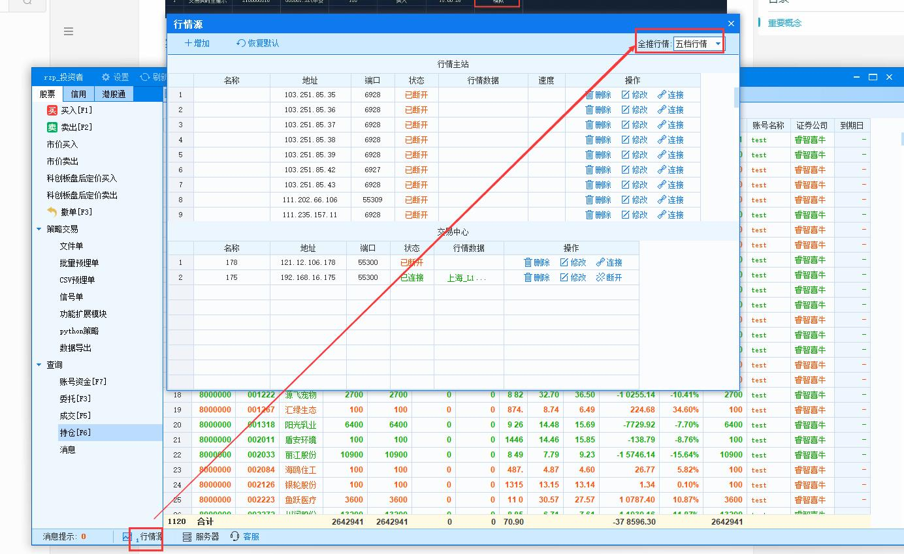
或者
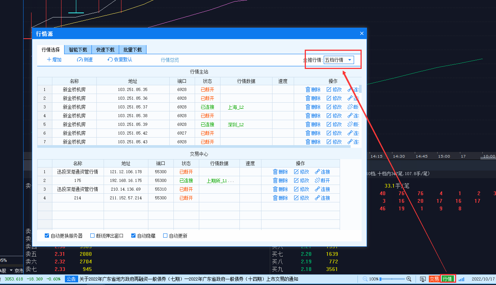
行情中心和交易中心到底有啥区别？
行情中心控制单支订阅，例如subscribe_quote
交易中心影响全推数据，例如get_full_tick,subscribe_whole_quote
passorder使用对手价下单报错/有误
问题描述
passorder参数prType填写14(对手价下单)时，委托价格有误，或信息提示对手价无效，无法下单!
解决办法
修改行情源对应的全推行情级别，见下图
或者
为什么在handlebar中获取期货tick时，tick是3S一个而非0.5s一个？
这是由于handlebar函数是逐K线驱动的，在实时行情中，handlebar会随着主图标的tick的更新被调用。
在这个问题场景中，主图的标的通常被设置为股票，而股票的tick通常是3s一个，这就导致handlebar函数3s才被调用一次
解决方法
使用定时器(run_time)进行计算
使用订阅推送(subscribe),在回调函数中进行计算
如果需要在handlebar中进行期货策略编写，建议将主图设置为期货品种，来保证handlebar调用频率
为什么在非交易时间段handlebar也会被调用
handlebar受行情数据推送驱动，在非交易时段，行情服务会做一系列准备工作，其中可能伴随着服务重启，在重启后为了保证数据齐全，客户端会重新订阅数据，这时服务会推送最新的数据，客户端会把推送的最新数据更新至缓存，并向上层策略推送更新，也就是触发handlebar执行
这个合并数据的驱动执行只会在最新一根bar而不会在历史范围，策略可以根据需要处理这次推送或直接根据交易时间跳过这个驱动，例如判断time小于09:15则直接return
关于证券状态openint值的详细说明
沪市
| 时间段 | 状态 | 编码 |
|---|---|---|
| 9:15 - 9:25 | 盘前集合竞价 | 12 |
| 9:25 - 14:57 | 盘中连续竞价 | 13 |
| 14:57 - 15:00 | 盘后集合竞价 | 18 |
| 15:00 | 收盘状态 | 15 |
| 15:05 - 15:30 | 盘后定价 | 22 |
| 15:30 | 盘后定价结束 | 23 |
| 上一状态后 | 收盘状态 | 15 |
深市
| 时间段 | 状态 | 编码 |
|---|---|---|
| 9:15 - 9:25 | 盘前集合竞价 | 12 |
| 9:25 - 9:30 | 休市 | 14 |
| 9:30 - 11:30 | 盘中连续竞价 | 13 |
| 11:30 - 13:00 | 休市 | 14 |
| 13:00 - 14:57 | 盘中连续竞价 | 13 |
| 14:57 - 15:00 | 盘后集合竞价 | 18 |
| 15:00 | 发收盘状态 | 15 |
| 15:05 - 15:30 | 盘后定价 | 22 |
| 15:30 | 盘后定价结束 | 23 |
| 上一状态后 | 收盘状态 | 15 |
静态数据问题
报错：[系统]ERROR：******.**获取合约乘数和最小变动价位失败，跳过
点击右下角【行情】按钮，选择【智能下载】，数据选项下拉框勾选【过期合约列表】点击该面板右下角【开始】，待过期合约数据补充完毕后，即可正常获取过期合约数据。
软件运行日志相关
如何找到软件运行日志
Log文件通常在安装目录下的.\userdata\log文件夹中，在 .\userdata\log 文件夹中，你可能会看到一个或者多个 log 文件，通常以 '.log' 作为扩展名。这些文件将包含软件运行时的详细情况。
投研：{安装目录}\userdata\log
说明
XtClient_20210922.log - 客户端常规日志
XtClient_datasource_20210922.log - 行情数据日志
XtClient_Formula_20210922.log - 策略运行日志
XtClient_FormulaOutput.log - 策略输出日志
QMT：{安装目录}\userdata\log
说明
XtClient_20210922.log - 客户端常规日志
XtClient_Formula_20210922.log - 策略运行日志
XtClient_FormulaOutput.log - 策略输出日志
XtClient_PerformanceFile_20210922.log - 客户端流程节点日志
极简模式：{安装目录}\userdata_mini\log
说明
XtMiniQuote_20210917.log - 行情策略模块日志
XtMiniQmt_20210917.log - 客户端常规日志
XtMiniQmt_perform_20210917.log - 客户端流程节点日志